Gunungkidul, Surga Pantainya Jogja
Mumpung lagi musim liburan, sekali-sekali posting tentang jalan-jalan ah. Pertengahan September kemarin, saya dan teman-teman pengen piknik ke Pantai. Akhirnya kita memutuskan untuk menjelajahi pantai-pantai di Gunungkidul yang buanyak banget jumlahnya.
Kita berangkat dari rumah sore hari karena ingin bermalam di pantai. Destinasi pertama: Pantai Ngobaran.
Perjalanan dari Muntilan ke Pantai Ngobaran normalnya memakan waktu kurang lebih 2 jam. Tetapi karena mobil sempat mogok di jalan, perjalanan ke Pantai Ngobaran memakan waktu 5 jam lebih. Kita berangkat jam 7 malam dan nyampe sana jam 12 malem.
Pantai Ngobaran & Nguyahan
Di Ngobaran terdapat bangunan semacam Pura untuk penganut kepercayaan Kejawan. Di dalam pura terdapat patung-patung Dewa yang di bagian bawahnya bertuliskan nasihat singkat dalam huruf jawa dan latin.
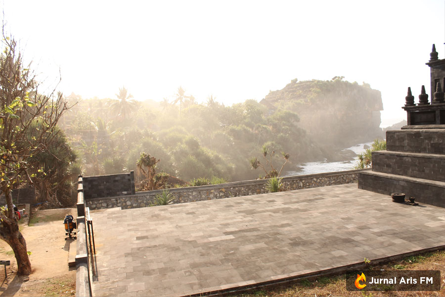
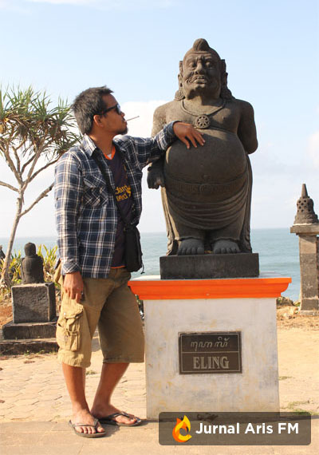 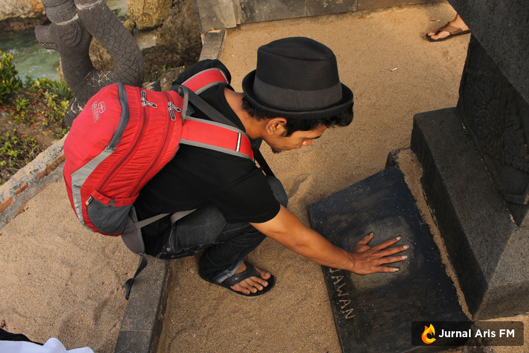 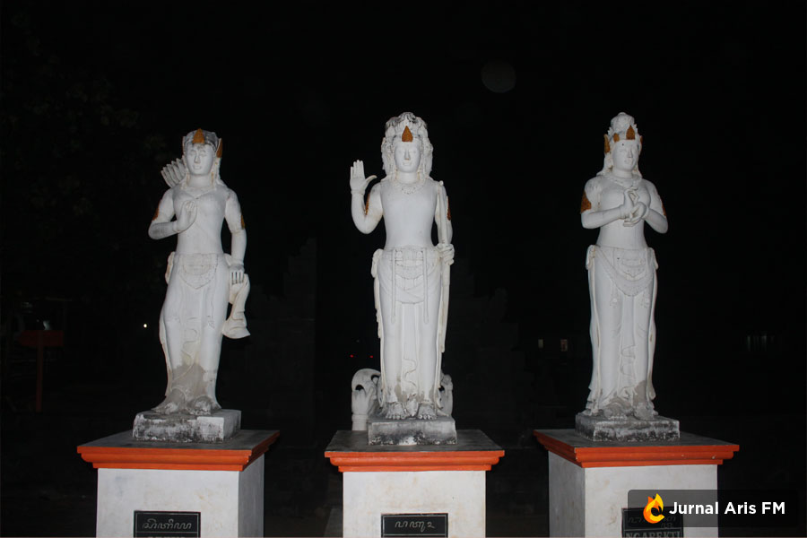
Terpisah satu bukit kecil dari Ngobaran terdapat sebuah pantai lagi bernama Nguyahan. Di Nguyahan ada banyak gubuk-gubuk kecil yang disewakan. Di gubuk-gubuk itulah kita bermalam, tiduran menghadap ke pantai diiringi deburan ombak yang aduhai, apalagi kalau tidurnya bareng… ah sudahlah.
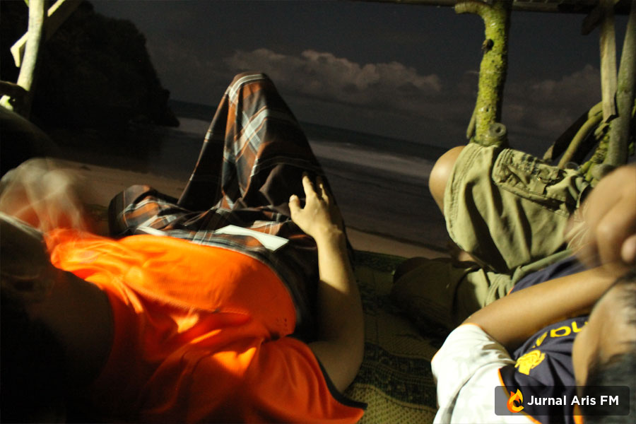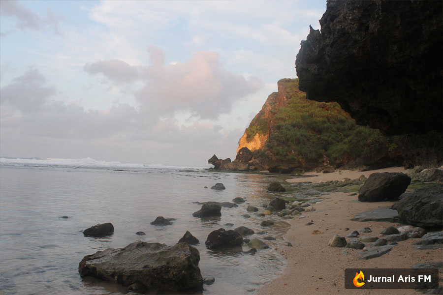
Di Nguyahan rupanya kita tidak sendirian, ada pasangan muda yang tengah berbulan madu juga di pantai ini.
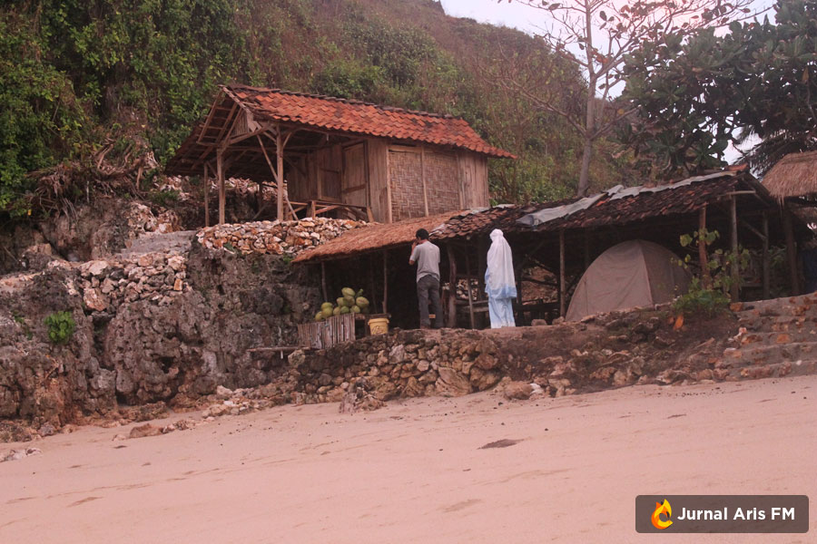Sholat berjamaah di tepi pantai, sungguh romantis sekali
Pantai Ngrenehan
Selepas dari Ngobaran, kita lanjut ke destinasi berikutnya: Pantai Ngrenehan.
Pantai Ngrenehan ini lokasinya tidak terlalu jauh dari Ngobaran, kurang lebih 2 KM. Ngrenehan ini berupa teluk jadi ombaknya tidak terlalu besar dan pasir putihnya sungguh lembut sekali. Cocok banget buat maen-maen air, tapi kita gak maen air disini karena masih dingin banget. Oh ya di Ngrenehan ini terdapat pasar ikan dan perahu-perahu nelayan juga.
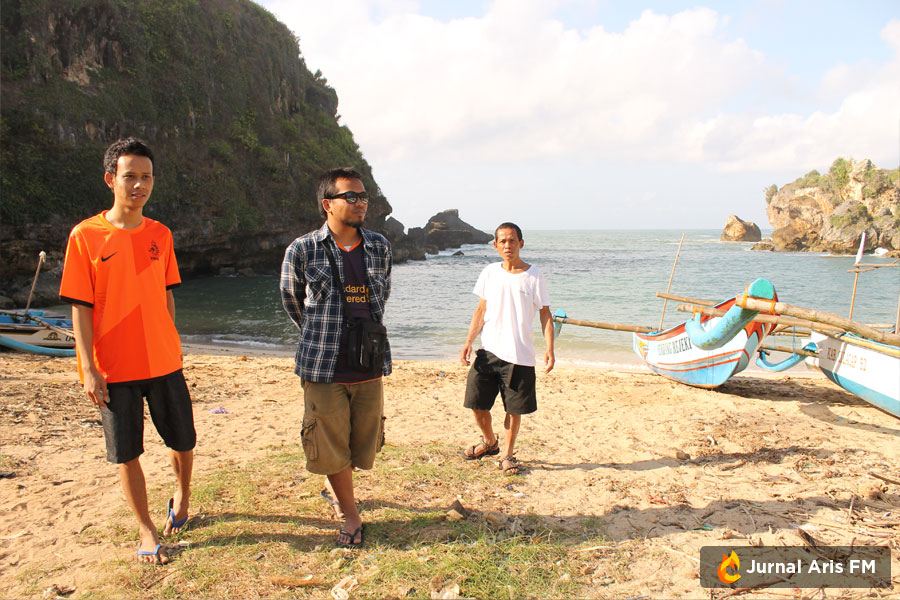
Pantai Drini
Tujuan berikutnya adalah Pantai Drini. Disini terdapat pulau kecil yang ketika surut bisa kita seberangi. Disini juga terdapat aktivitas nelayan seperti di Ngrenehan. Disini kita maen air sepuasnya.
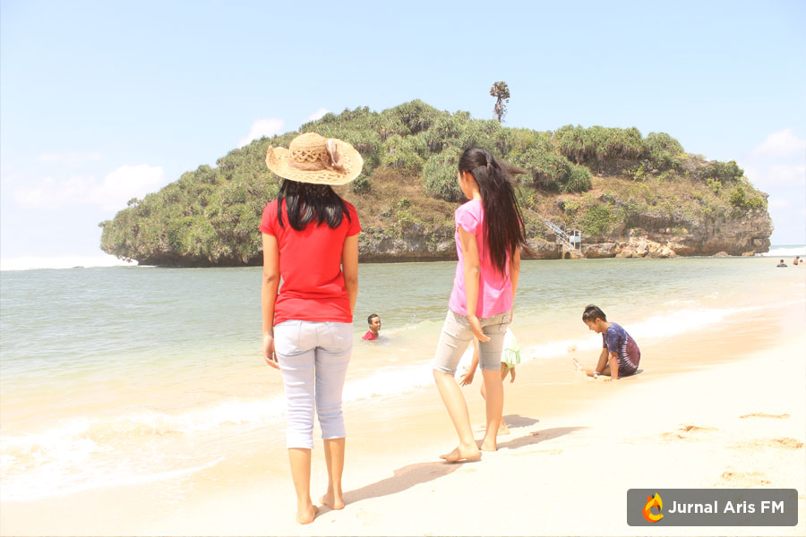
Pantai Pok Tunggal
Destinasi terakhir kita adalah Pantai Pok Tunggal. Dinamai Pok Tunggal karena di pantai ini terdapat sebuah pohon yang ikonik (yang sayangnya malah lupa gak difoto). Perjalanan ke pantai ini lumayan sulit karena jalannya masih berbatu-batu dan sempit. Tapi sulitnya perjalanan terbayar dengan keindahan pantainya.
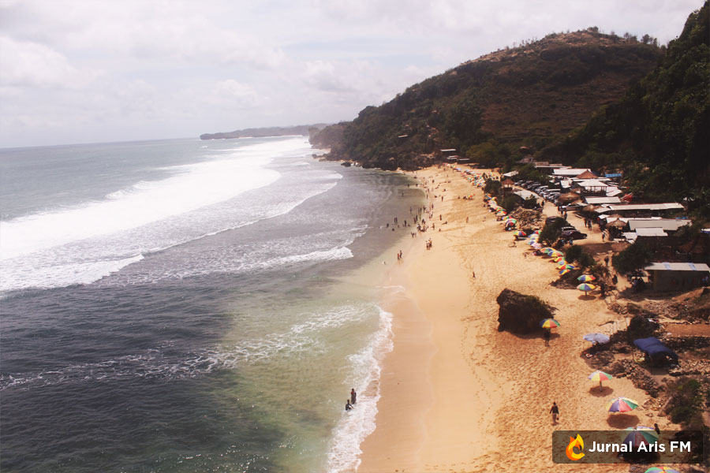
Di sebelah kiri dan kanan pantai ini terdapat bukit yang bisa kita naiki (dan di puncaknya ada yang jualan juga). Tapi jalannya lumayan serem.
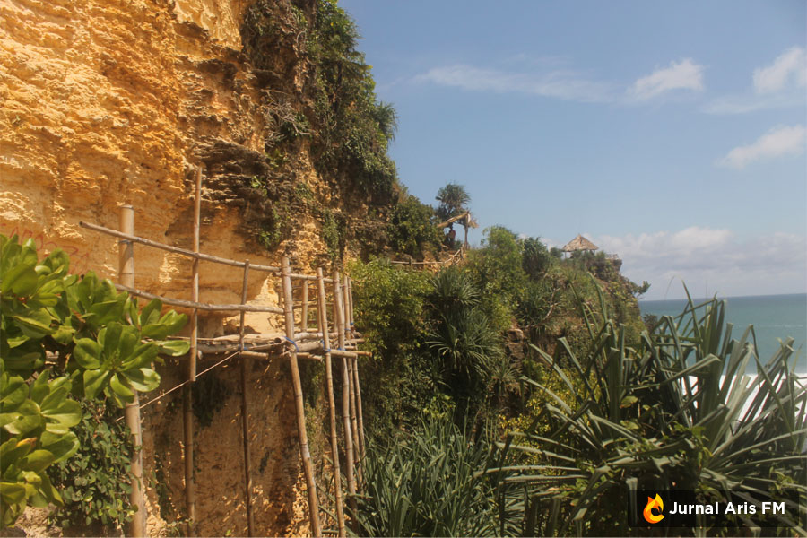Jembatan ke puncak bukit
…
Rencana awal sih setelah Pok Tunggal kita masih pengen ke Pantai Siung dan Wediombo. Tapi berhubung sudah sore dan sudah capek banget, akhirnya kita memutuskan untuk pulang saja. Toh kita juga sudah mengunjungi 7 pantai (selain 5 pantai di atas kita juga ke Indrayanti dan Baron, tidak saya tulis karena tidak ada foto-fotonya :P ).
Dan berakhirlah piknik sehari semalam kita. Meskipun badan capek, kulit terbakar dan kaki lecet karena nginjek karang, tapi setidaknya pikiran menjadi segar dan hati pun puas.